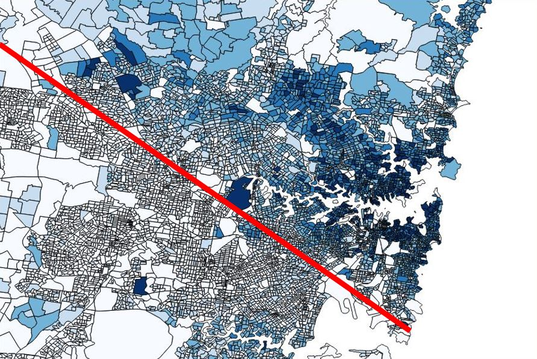

From this map we can clearly see that the number of male earning above 3000 dollars per week is larger the number of female in Sydney.
By putting the dataset to the excel document, I found that, in 2016, the number of female in NSW was about 0.2million more than the number of female, however, the percentage of male earning above 3000 dollars per week was about 5.2 percent while female occupies only 1.7 percent. In addition the number of male earning above 3000 dollars was about 0.1million more than female.
One of the main reasons behand this pay gap could be gender inequality. According to Australian Human Rights Commission, women have to work an extra 56 days a year to earn the same pay as men for doing the same work, in addition, females in Australia are over-represented in low-paid companies and insecure work instead of presented in leadership roles.
The 3D map above shows
From the dataset, I found that, in 2016, the percentage of male without income occupied around 8 percent, while the number for female without income was about 11 percent.
One of the reasons could be education and employment inequality. In 2016, about 26 percent women aged 20-24 years was not fully engaged in either education or employment, and the number of men was 22 percent, mentioned by Australian Bereau of Statistics.
